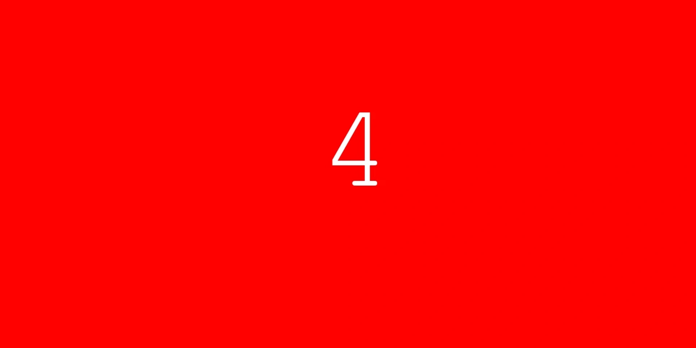

Bize ulaşın
Yeni bir rotayı birlikte konuşalım.
Genel bilgi, kurumsal talepler ve marka hakkında merak ettikleriniz için doğrudan iletişim kanallarımızı kullanabilirsiniz.
Tevfik İleri Mah. Firuze Sok. No: 70/1
Pursaklar, Ankara, Türkiye
Pazartesi–Cuma
09.00–18.00
Konum
Ankara genel merkez.
Harita internet bağlantısı bulunduğunda OpenStreetMap üzerinden yüklenir.